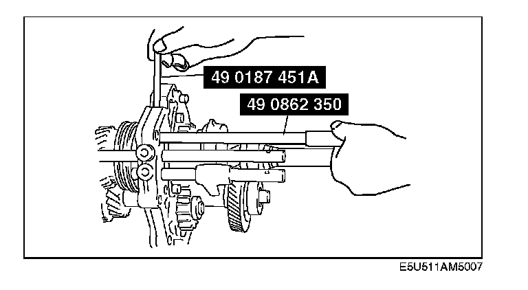
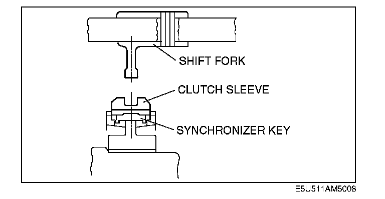
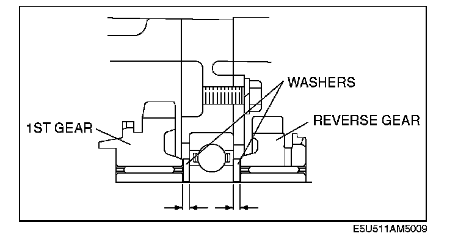

1ST/2ND Shift Fork and Rod, 3RD/4TH Shift Fork and Rod, and Interlock Pin Assembly Note
1st/2nd Shift Fork and Rod, 3rd/4th Shift Fork and Rod, and Interlock Pin Assembly Note1. Set the 1st/2nd shift fork onto the 1st/2nd clutch hub component.

2. Install the 3rd/4th shift fork and 3rd/4th shift rod, and install the interlock pin into the bearing housing as described in the interlock pin assembly note. (See 05-11-10 Interlock Pin Assembly Note.)
3. Install the spring, ball and new washer, then tighten the cap plug.
Tightening torque:
19 - 25 N-m (2.0 - 2.5 kgf-m, 14 - 18 ft-lbf)
4. Install the roll pin.

5. Verify that the centers of the shift fork and clutch hub sleeve are aligned properly. If they are not, select the proper washer to install between 1st gear and the mainshaft front bearing, and between reverse gear and the mainshaft front bearing.

6. The following washer thicknesses are available. The total thickness of the front and rear washers should be as follows.
Total thickness:
5.9 - 6.0 mm (0.232 - 0.236 in)
Washer thickness:
2.2 mm (0.087 in), 2.7 mm (0.106 in), 3.0 mm (0.118 in), 3.2 mm (0.126 in), 3.7 mm (0.146 in)